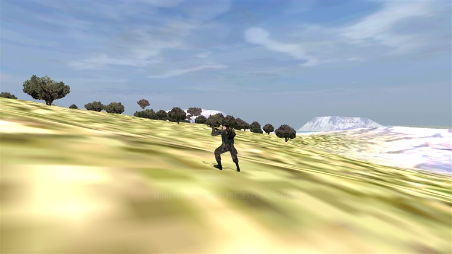
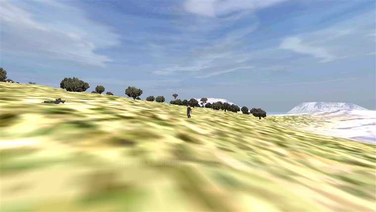

Field Photos» Every frame is a live capture from a real build « |
SECTION: MEDIA |
|
House Rule
Nothing on this page is staged for the camera. If a caption says a sentry
spotted the rifle, the engine really made that call, and the readout in the
frame is its verdict.
Requisition |
Field PhotosStraight from the war. These are development captures of Guerrilla Mode running in the engine: the debug readouts are left in the frame so you can see the systems making their calls in real time. ★ In the Field LIVE CAPTUREThe whole game in one frame: one fighter,
one rifle, an island that belongs to somebody else. For now.
The Undercover SetOne fighter, one rifle, one Soviet sentry, and the only thing changing between frames is what the sentry can see. The full sequence, with the rules spelled out, lives in the Undercover dossier.
 LIVE CAPTURETwenty metres is the line. At
conversational range nothing stays hidden. Note the sentry, left: already prone, already aiming.
Starting a War
LIVE CAPTUREThe new-game screen. Pick the island,
then cycle the occupier and the resistance. This matchup, an Egyptian frontier resistance against
the IDF on Sinai, does not exist anywhere in the stock game.
|

>> Radio check, over.
Uslu dur!: the official site for this overhaul project. Bohemia Interactive owns the ARMA and Operation Flashpoint trademarks and has no involvement in this project. All captures are our own, from development builds; game data under APL-SA.